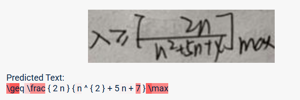
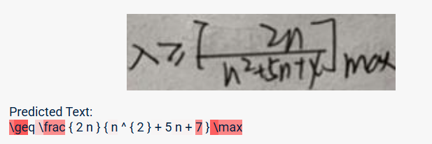
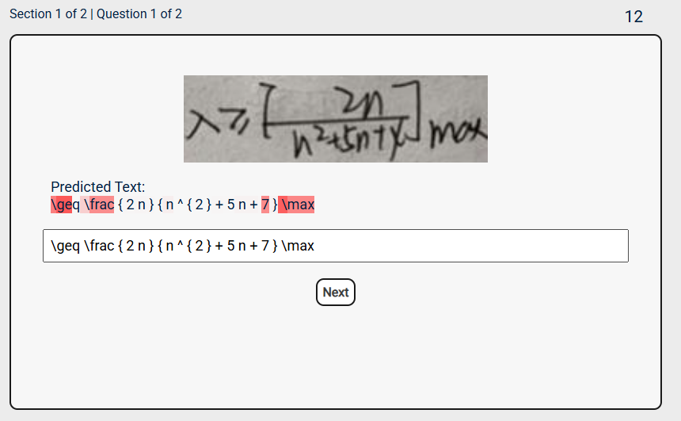
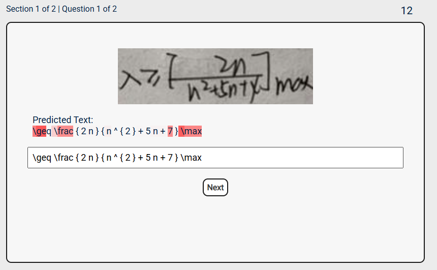

- Uncertainty highlighting is on if "Predicted Text" is highlighted.
(-/-)
20
Thank you for participation in our study.
Please navigate to Prolific or with the code C18F0V8M.
Thank you for testing out our study.
Your total reward is $0.00 (0 questions answered).
Please complete the exit questionnaire for providing feedback on the user study.
Welcome to our user study. In this experiment, you will be reviewing and correcting latex equations generated by an AI from handwritten math images. Your task is to carefully evaluate the AI’s transcription and fix any errors if they exist. The survey consists of three parts:
- You will first be shown the handwritten math image and the AI’s predicted transcription. Some transcriptions will include uncertainty highlighting, where parts of the text highlighted in red show where the model is less confident. If the AI is 100% sure of a section, it will appear without red highlighting.
- You can tell if uncertainty highlighting is present by looking at the "Predicted Text." If it is highlighted, then uncertainty highlighting is present.
Example: Uncertainty Highlighting


Example: No Uncertainty Highlighting

On the same page as the image and predicted text, there will be a text input box that is prefilled with the AI’s answer along with a visible countdown timer set to 20 seconds. Your task is to review the transcription and make any necessary corrections using the input box, before the timer runs out.


Confidence Rating: Next, you will be asked to rate your confidence that the transcription is correct by selecting a number from 1 (not confident) to 5 (very confident). A choice is required to move on.

Finally, you will be asked three feedback questions. Each question is shown with a text box, and each answer must be at least 25 characters long before you can proceed.
The experiment will have you check/fix 10 questions in total.
You are not permitted to leave this tab for the duration of the experiment. This will be monitored and violation of this can result in your submission being rejected.
The average time of the experiment is 10 minutes.
You will not be paid if you already participated in this study before.
Click Start study if you understood all the instructions and want to start with the first question. Feel free to re-read the instructions again (Previous).
You are not permitted to leave this tab for the duration of the experiment. This will be monitored and violation of this can result in your submission being rejected.
The average time of the experiment is 10 minutes.
You will not be paid if you already participated in this study before.
Click Start study if you understood all the instructions and want to start with the first question. Feel free to re-read the instructions again (Previous).
Predicted Text:
Please rate your confidence in your answer from 1 (not confident) to 5 (very confident):
Qualitative Feedback
1. What did you think about the AI transcription quality?
Please enter at least 25 characters.
2. How would you improve the explanations provided by the AI?
Please enter at least 25 characters.
3. Any additional comments?
Please enter at least 25 characters.